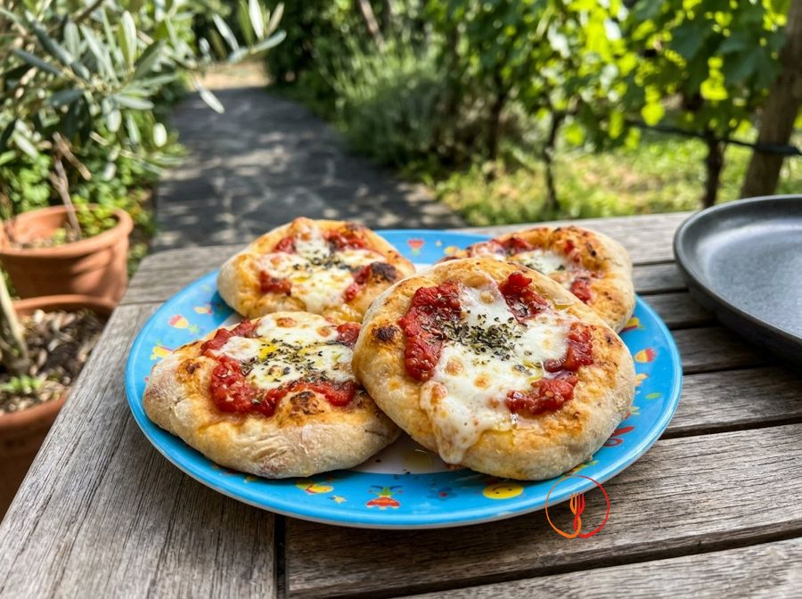

Mini pizzette
Soft mini pizzas perfect for parties.
Mini pizzas are a timeless classic for appetizers and children's parties. The soft and fragrant base hosts the bold flavor of tomato and oregano, offering a rustic and irresistible bite.
Ingredients
- All-purpose flour250 g
- Lukewarm water140 ml
- Fresh yeast4 g
- Tomato puree100 ml
- Mozzarella cheese100 g
- Extra virgin olive oil20 g
- Dried oregano1 g
Allergens
Gluten, Milk
Method
- In a large bowl, dissolve the fresh yeast in lukewarm water (about 30°C/86°F).
- Add the flour and extra virgin olive oil, and start kneading vigorously.
- Transfer the dough to a floured surface and work it for about 10 minutes until it becomes smooth and elastic.
- Place the dough in a lightly oiled bowl, cover with a damp cloth, and let it rise in a warm place for 60 minutes or until doubled in size.
- Divide the dough into 12 small balls of approximately 35-40g each.
- Flatten each ball with your fingers to form discs about 6-8 cm in diameter and place them on a tray lined with parchment paper.
- Top the center of each mini pizza with a tablespoon of tomato puree and a pinch of oregano.
- Bake in a preheated static oven at 220°C (430°F) for 8 minutes.
- Add finely chopped mozzarella to each pizza and continue baking for another 4 minutes until the cheese is melted.
- Remove from the oven and let cool slightly before serving to children to prevent burns.
Tips
- Let the dough rise in a warm place away from drafts for optimal development.
- Use low-moisture mozzarella to prevent it from releasing too much liquid during baking.
- Lightly grease your hands with oil to shape the disks without the dough sticking to your fingers.
Variations
- Replace oregano with fresh basil leaves added immediately after baking.
- Enrich the mini pizzas with an oily anchovy or capers for a more savory Mediterranean flavor.
Nutrition facts (estimate)
| Per serving (125 g) | Per 100 g | |
|---|---|---|
| Energy | 1338 kJ / 318 kcal | 1070 kJ / 254 kcal |
| Protein | 11 g | 9.0 g |
| Carbohydrates | 45 g | 36 g |
| of which sugars | 1.6 g | 1.3 g |
| Fat | 9.8 g | 7.8 g |
| of which saturates | 4.4 g | 3.5 g |
| Fibre | 1.8 g | 1.4 g |
| Salt | 0.2 g | 0.16 g |
AI estimates based on average CREA / USDA data: indicative only, not a substitute for medical or dietitian advice.
Open the recipe in the app for the shopping list, ingredient sheets and nearby shops.